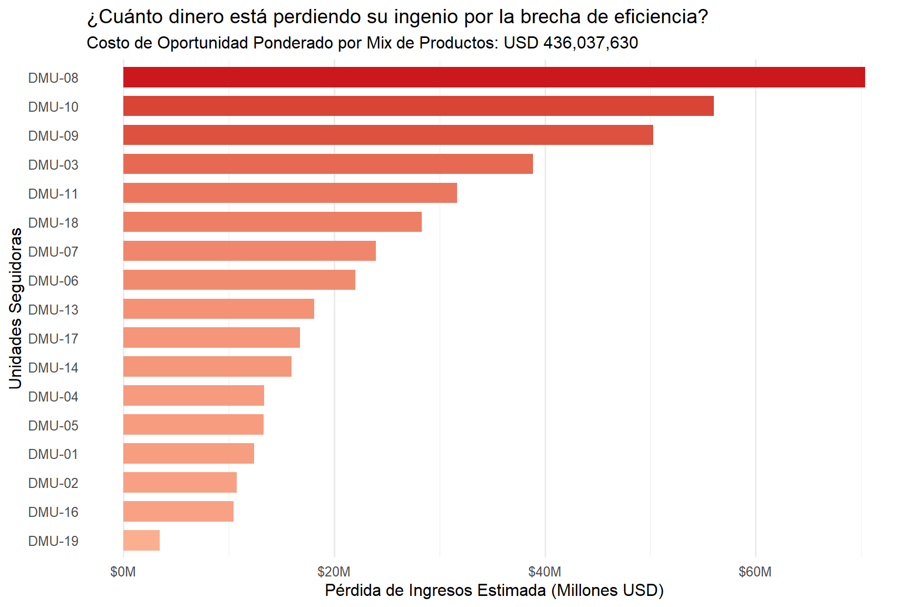

¿Cuánto le cuesta la “Ceguera Operativa” a su Ingenio?
Agroindustria
Industria Azucarera
Eficiencia
Transformación Digital
NOA
Optimización
El costo oculto de la ineficiencia en el NOA
En la industria azucarera del Noroeste Argentino, existe un fantasma que recorre los directorios: el Capital Inmovilizado. No se trata de máquinas paradas, sino de la brecha entre lo que su empresa produce hoy y lo que podría producir con los mismos recursos si operara en la Frontera de Eficiencia.
De acuerdo con mis investigaciones recientes sobre la competitividad del sector, la pérdida sistémica por ineficiencia técnica en la región alcanza la alarmante cifra de USD 436 millones.
“Este análisis fue procesado íntegramente en R, utilizando modelos DEA parametrizados para la industria local.”
La pregunta no es si su ingenio es productivo, sino qué tan lejos está del líder del sector y cuántos dólares está dejando sobre la mesa cada día por no cerrar esa brecha.
¿Qué es la Ceguera Operativa?
Muchos CEOs y dueños de ingenios confían en su experiencia y en los reportes diarios de molienda. Sin embargo, la complejidad de una biorrefinería moderna genera puntos ciegos. La ceguera operativa ocurre cuando:
Se asume que la única forma de mejorar es con CAPEX (comprar más “fierros”).
No se identifica el peso real de los determinantes (vapor, escala, logística) en el resultado final.
Se opera bajo promedios históricos en lugar de modelos predictivos.
De la Autopsia al Diagnóstico Predictivo
En Growise, no nos quedamos en el “qué pasó”. Usamos modelos de Análisis Envolvente de Datos (DEA) y algoritmos de Machine Learning para realizar una “autopsia digital” de los procesos.
Identificamos su índice de eficiencia (\(\theta\)) y, lo más importante, determinamos qué variables específicas debe ajustar para alcanzar la frontera técnica. No es magia, es ciencia de datos aplicada a la rentabilidad azucarera.
El “Cómo”: La Ciencia detrás del Rescate
Para que usted pueda tomar decisiones, no necesita más datos (ya tiene demasiados), necesita Inteligencia de Datos. En Growise, aplicamos una metodología de tres capas que transforma la operación:
1. Identificación de la Frontera (Benchmarking Real):
No lo comparamos con un “ideal teórico”, sino con el Líder Real del sector. Usando modelos de Análisis Envolvente de Datos (DEA), procesamos las variables públicas del IPAAT para ubicar a su ingenio en la curva de eficiencia técnica (\(\theta\)). Si su índice es 0.85, usted tiene un 15% de capacidad instalada que no está facturando.
2. La “Autopsia Digital” con Machine Learning:
Una vez identificada la brecha, el “Cómo” resolverla surge de sus propios datos históricos. Aplicamos algoritmos de Random Forest y Gradient Boosting para encontrar las variables críticas que realmente mueven la aguja:
¿Es el porcentaje de trash en la caña?
¿Es la presión de vapor en momentos críticos?
¿Es una ineficiencia en la escala de molienda?
El algoritmo nos dice exactamente qué variable “explicativa” está dañando su rentabilidad.
3. Hoja de Ruta de Inversión (Prescripción):
El resultado final no es un gráfico lindo, sino una conclusión de negocio: “Para cerrar su brecha de eficiencia del 15%, no necesita un trapiche nuevo; necesita optimizar el flujo logístico de entrada en X puntos”. Esto es ahorrarle carga cognitiva al CEO.
¿Dónde se ubica su empresa en este mapa?
Este análisis utiliza datos públicos, pero la verdadera transformación ocurre cuando aplicamos estos modelos a los datos de tiempo real de su planta.
Si está listo para dejar de operar bajo promedios históricos y quiere descubrir su hoja de ruta hacia la frontera de eficiencia, agendemos una breve charla técnica.
Ing. Marcelo J. Lamarque, MBA .
Estratega en Eficiencia Operativa | Doctorando en Ingeniería Industrial | Co-founder de Growise